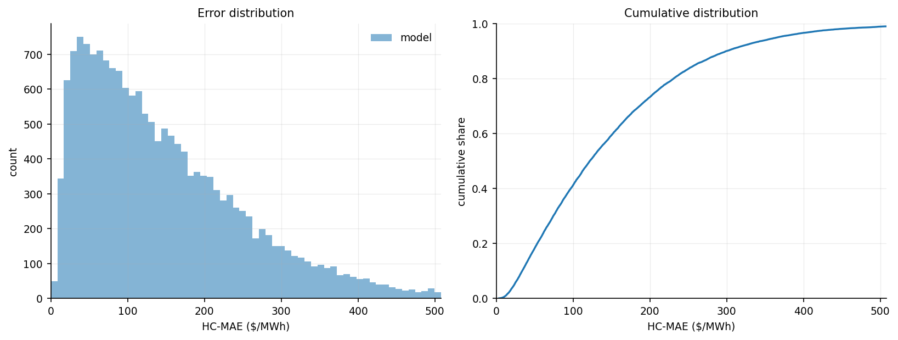
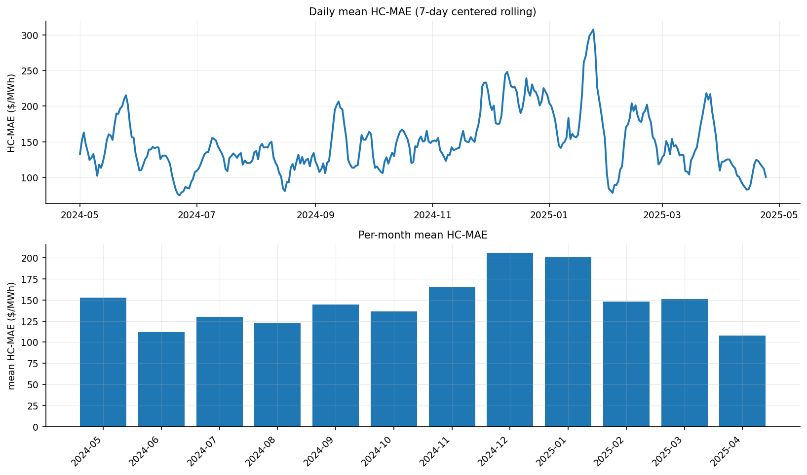
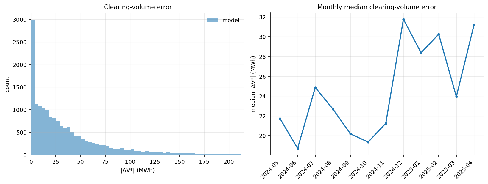
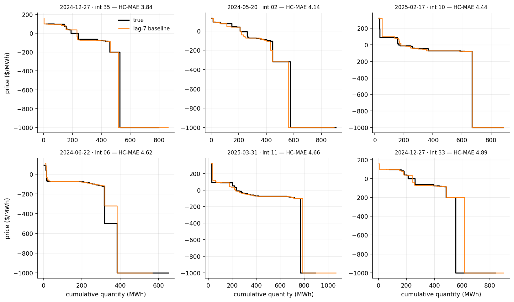
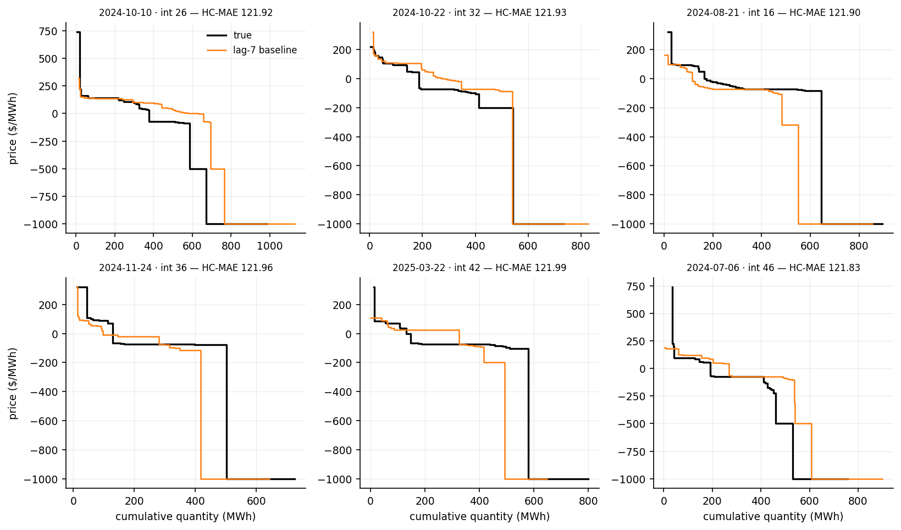
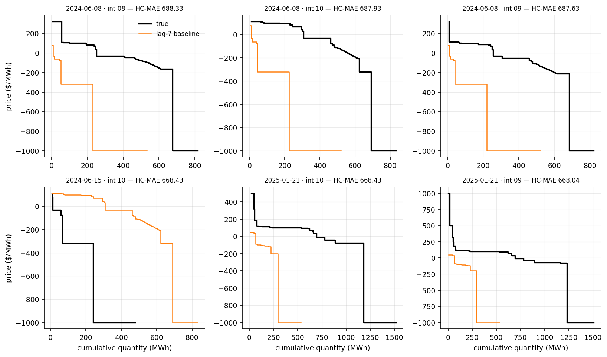

The forecast of an auction is the curve of the same interval 7 days earlier, without any change. The forecast horizon is 7 days, so this is the newest curve known at forecast time. Nothing is fitted. Every Δ and every Win % on this site is measured against this model on the same auctions.
7-day-ahead · test 2024-05-01 → 2025-04-24 · 17,232 auctions
| This model | |
|---|---|
| Mean HC-MAE ($/MWh) | 148.97 |
| Median HC-MAE ($/MWh) | 121.92 |
| Win % vs lag-7 | 0.0% |
| Mean |ΔV*| (MWh) | 38.02 |
| Median |ΔV*| (MWh) | 23.72 |
| Mean |ΔP*| ($/MWh) | 30.29 |
| Median |ΔP*| ($/MWh) | 5.75 |


The predicted demand curve is crossed with the true supply curve, and the error is how far this moves the clearing point (V*, P*).
| This model | |
|---|---|
| Mean |ΔV*| (MWh) | 38.02 |
| Median |ΔV*| (MWh) | 23.72 |
| Win % on |ΔV*| | - |
| Mean |ΔP*| ($/MWh) | 30.29 |
| Median |ΔP*| ($/MWh) | 5.75 |
A few price-floor auctions make the mean of |ΔP*| large, so the median is the summary.



